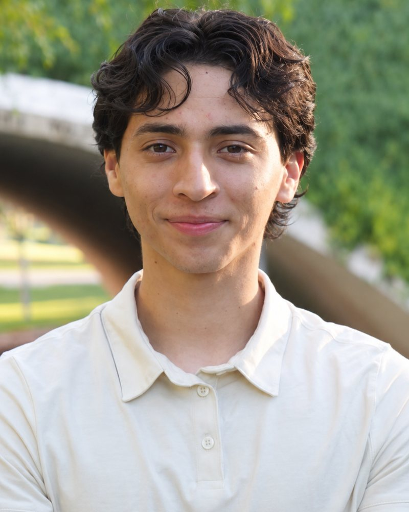

Skip to content
Autism Kin
association
Home
About
Caregiver Course
Resources
FAQ
Contact
Sign in
EN
ES
中文
Menu
Back
Now forming in Los Angeles
Empowering every voice.
Start the free course
Browse free resources
What we're building
The course, in three pillars
I
II
III
A note from our founder

Peter Rodriguez, M.S., RBT
Create a free account
Sign in
Peter Rodriguez, M.S., RBT
I
II
III